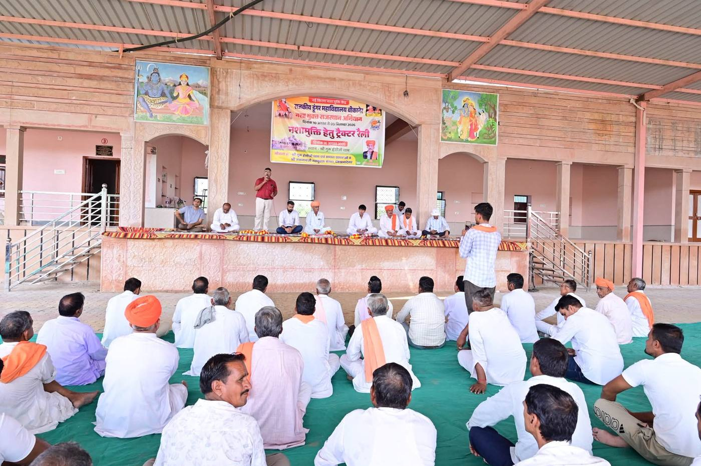
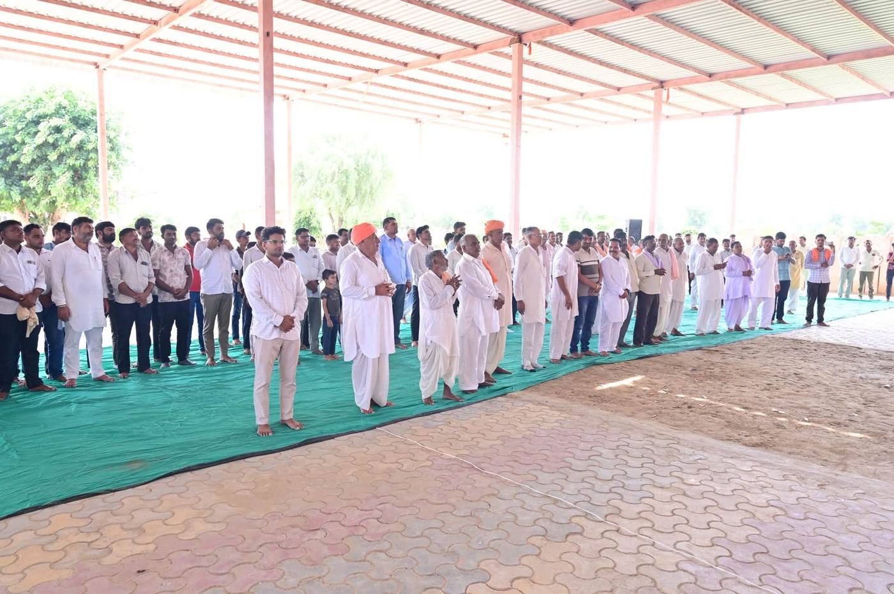
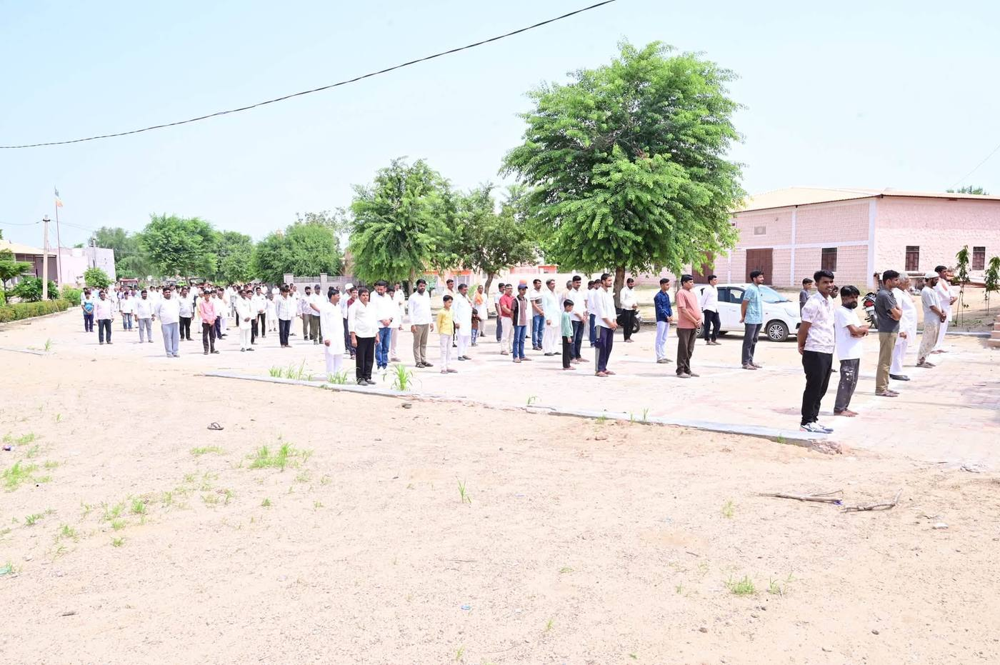

गाँव की सामूहिक पहल
ग्राम लोकसंकल्प सभा
गाँव से शुरू होगा परिवर्तन
यह सभा क्या है?
अभियान की आधारशिला
ग्राम लोकसंकल्प सभा अभियान की आधारशिला है। प्रत्येक गाँव में शिक्षक, विद्यार्थी, अभिभावक, पंचायत प्रतिनिधि, महिला समूह, युवा एवं नागरिक एकत्रित होकर नशे की सामाजिक स्वीकृति के विरुद्ध सामूहिक संवाद और संकल्प लेते हैं।
सभा के लिए किसी बड़े आयोजन या खर्च की आवश्यकता नहीं है। विद्यालय का प्रांगण, पंचायत भवन या मंदिर परिसर — जहाँ गाँव के लोग सहज बैठ सकें, वही जगह पर्याप्त है।
ग्राम सभा के उद्देश्य
- नशे के सामाजिक दुष्प्रभावों पर संवाद।
- Good Parenting को बढ़ावा।
- सकारात्मक संगति के महत्व पर चर्चा।
- नशामुक्त सामाजिक आयोजनों का संकल्प।
- ग्राम लोकसंकल्प समिति का गठन।

छह सरल कदम
सभा कैसे आयोजित करें
पहली सभा दो घंटे में पूरी हो सकती है। नीचे दिए क्रम का पालन करें।
- तिथि तय करें — कोई ऐसा दिन चुनें जब गाँव के अधिकतर लोग खाली हों। तिथि कम से कम एक सप्ताह पहले तय करें।
- पंचायत व विद्यालय को सूचित करें — सरपंच, विद्यालय के प्रधानाध्यापक, महिला समूह और युवा मंडल को व्यक्तिगत रूप से बुलाएँ। सबका निमंत्रण एक साथ जाए।
- मार्गदर्शिका डाउनलोड करें — ग्राम सभा संचालन मार्गदर्शिका से मंच संचालन स्क्रिप्ट, शपथ और कार्यक्रम दिवस चेकलिस्ट लें। कुछ प्रतियाँ पहले से छपवा लें।
- सामूहिक संवाद व संकल्प — पहले गाँव के लोगों को बोलने दें, फिर संकल्प पत्र सामूहिक रूप से पढ़ें। किसी व्यक्ति का नाम लेकर आलोचना न करें।
- समिति का गठन — सभा के अंत में लोकसंकल्प ग्राम समिति बनाएँ। उसमें शिक्षक, महिला, युवा और पंचायत — चारों का प्रतिनिधित्व रखें।
- रिपोर्ट अपलोड करें — सभा की फोटो और संक्षिप्त विवरण इसी पृष्ठ के फ़ॉर्म से भेजें। सत्यापन के बाद यह डैशबोर्ड पर दिखेगी।

लोकसंकल्प ग्राम समिति
परिवर्तन का स्थानीय नेतृत्व
प्रत्येक ग्राम सभा में गठित लोकसंकल्प ग्राम समिति गाँव में निरंतर जनजागरण एवं सामाजिक परिवर्तन की गतिविधियों का संचालन करेगी।
समिति की भूमिका
- मासिक बैठक आयोजित करना।
- नशामुक्ति संवाद चलाना।
- अभिभावक जागरूकता कार्यक्रम आयोजित करना।
- युवाओं को सकारात्मक गतिविधियों से जोड़ना।
- नशा छोड़ने के इच्छुक व्यक्तियों को सहायता सेवाओं से जोड़ना।
- नशामुक्त सामाजिक आयोजनों को बढ़ावा देना।
समिति में कौन-कौन?
समिति छोटी रखें ताकि बैठक आसानी से हो सके। ध्यान रखें कि हर वर्ग की आवाज़ उसमें शामिल हो।
- एक शिक्षक — संवाद और सामग्री की जिम्मेदारी।
- महिला समूह से दो सदस्य।
- दो युवा — गतिविधियाँ और खेल।
- पंचायत प्रतिनिधि — आयोजनों में सहयोग।
हमारा लक्ष्य — हर गाँव में लोकसंकल्प समिति, हर माह लोकसंकल्प बैठक।
रिपोर्ट
सभा की रिपोर्ट भेजें
सभा हो जाने के बाद यह फ़ॉर्म भरें। इससे आपके गाँव का काम पूरे राज्य के डैशबोर्ड पर दर्ज होगा।
धन्यवाद! आपके गाँव की सभा की जानकारी हम तक पहुँच गई है। सत्यापन के बाद यह रिपोर्ट डैशबोर्ड पर दिखाई देगी।
आगे बढ़ें